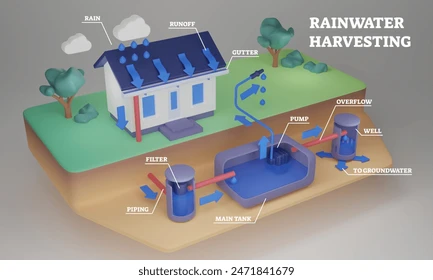
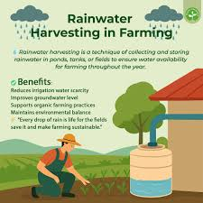
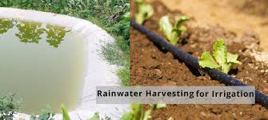
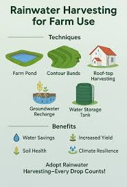
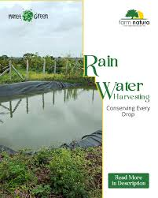
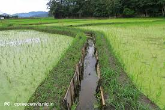
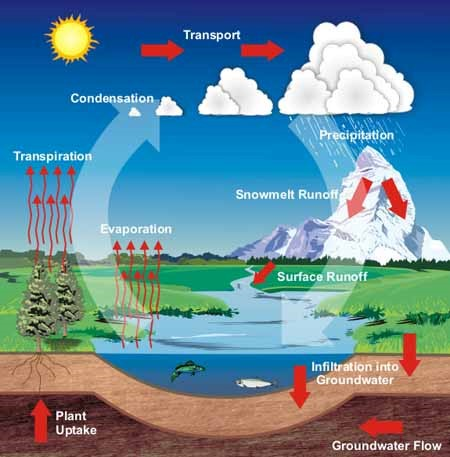

Farmer-Friendly Rainwater Harvesting System
This system design ensures effective rainwater capture and sustainable usage for agricultural needs, empowering farmers to manage water efficiently.
Key Components:
- Catchment Surface: Usually rooftops or specially prepared ground areas that collect rainwater.
- Gutters and Downspouts: Channels that convey rainfall from the catchment to storage tanks.
- First Flush Diverter: A device that discards the initial runoff containing debris and contaminants.
- Filtration Unit: Filters that remove leaves, dirt, and other impurities before storage.
- Storage Tanks: Durable tanks for storing clean harvested rainwater, sized according to farm needs.
- Distribution System: Pipes and hoses distributing stored water to fields for irrigation.
- Groundwater Recharge Pits: Optional structures that allow excess water to recharge aquifers.
- Overflow System: Safely directs surplus water to drains or recharge areas to avoid flooding.

Illustrative diagram showing catchment, filtration, storage, and irrigation layout.
Benefits for Farmers:
This layout helps farmers by:






- Ensuring consistent water availability during dry periods.
- Improving crop yields with sustainable irrigation.
- Reducing dependency on unpredictable rainfall and groundwater.
- Lowering irrigation costs and water taxes.
- Supporting soil health and preventing erosion.
Back to Home